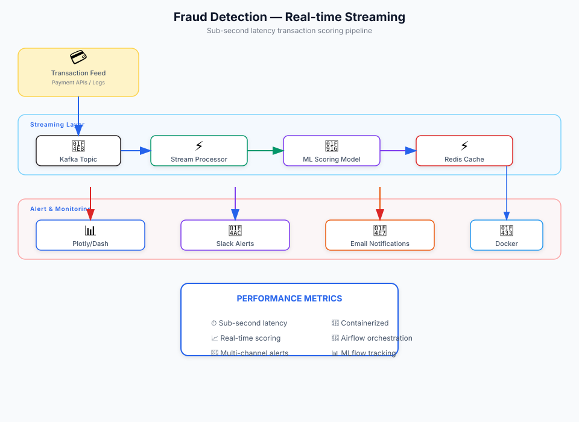

System Requirements
The Problem
Financial institutions need to detect fraudulent transactions in real-time to prevent losses. Batch processing systems introduce unacceptable delays, allowing fraud to occur before detection. The challenge is building a streaming pipeline that can process high-volume transaction data with sub-second latency while maintaining model accuracy and providing actionable alerts.
Architecture
Hover or tap any component to see details

Implementation
- Kafka Streaming: Configured Kafka topics for transaction ingestion with partitioning by merchant ID for parallel processing
- Feature Engineering: Built real-time feature extraction including transaction velocity, amount patterns, and historical behavior scores
- Model Serving: Deployed ML models via FastAPI with Redis caching for low-latency feature lookups
- Monitoring: Integrated Plotly/Dash dashboard for real-time fraud analytics and system health visualization
- Alerting: Implemented multi-channel alerting (Slack, Email, Webhooks) for suspicious transaction notifications
- Model Drift: Added monitoring for model performance degradation with automated retraining triggers
- Docker Containerization: Containerized the full stack for consistent deployment across environments
ML Models
- Random Forest: Baseline model for transaction classification
- Gradient Boosting: Improved accuracy through ensemble boosting
- Logistic Regression: Interpretable model for explainability requirements
Models are tracked with MLflow for experiment comparison and version management.
Outcome
The system achieves sub-second fraud prediction on incoming transactions, enabling real-time decision making. The monitoring dashboard provides visibility into fraud patterns and system health, while multi-channel alerting ensures timely response to suspicious activity.
The containerized architecture enables easy scaling and deployment in production environments, with automated retraining capabilities to maintain model accuracy.